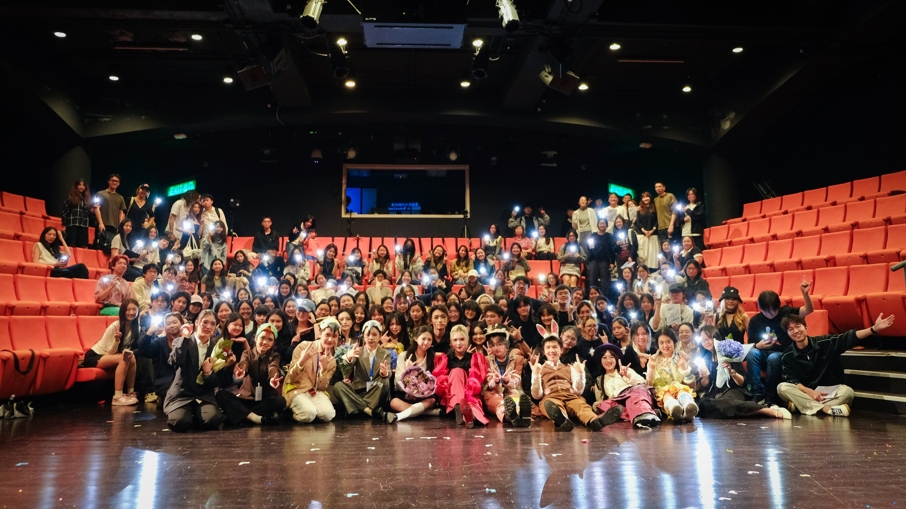
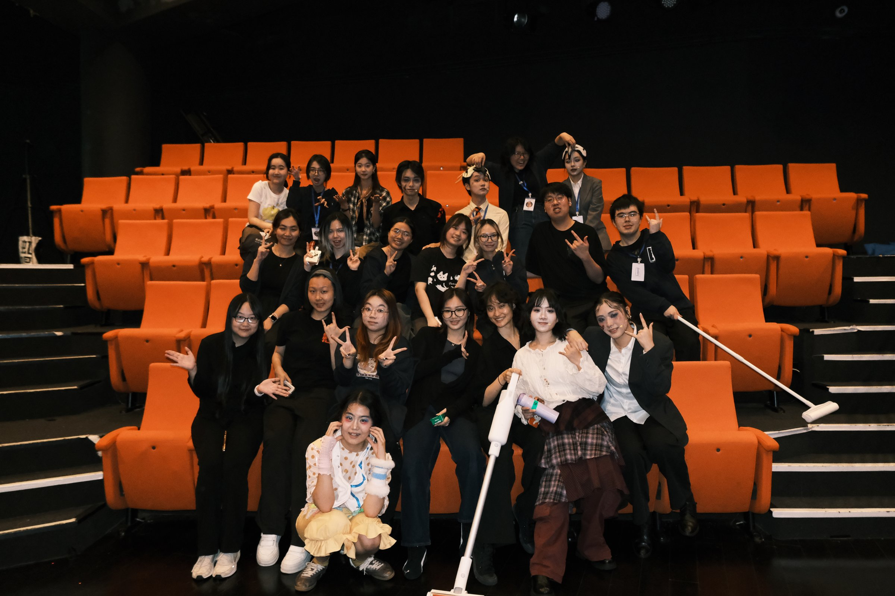
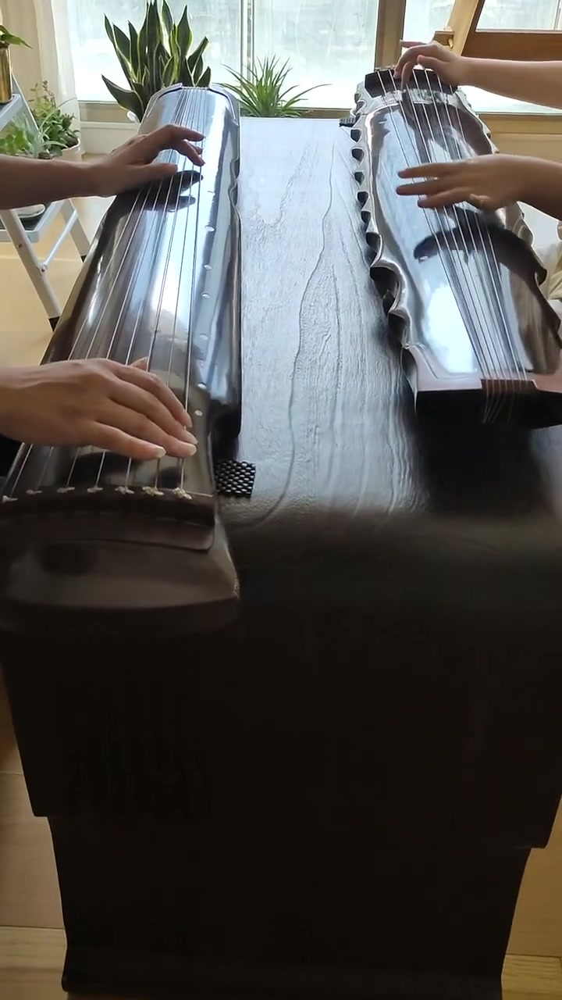

A little more about me
Off the clock.
On the stage.
Musical theatre, hip-hop dance and music are part of my life outside the classroom and the office. Here are a few moments from the theatre, dance and a guqin performance.
01 / Musical Theatre
The people behind the performance.
A glimpse of my musical theatre experience, and the people who make it memorable.


An excerpt from my performance in Come From Away.
Listen to “Welcome to the Rock” on Google Drive ↗02 / Dance
Finding my rhythm.
Two dance clips from my personal collection. Press play to watch.
In motion.
Another beat.
03 / Guqin
A quieter kind of rhythm.
A personal guqin performance. Alongside musical theatre and dance, I enjoy playing this traditional Chinese seven-string zither.

Watch on Google Drive ↗04 / Other Interests
Music in everyday life.
Piano & Guqin
Alongside theatre and dance, I also enjoy playing the piano and the guqin, the Chinese seven-string zither.
Back to the portfolio